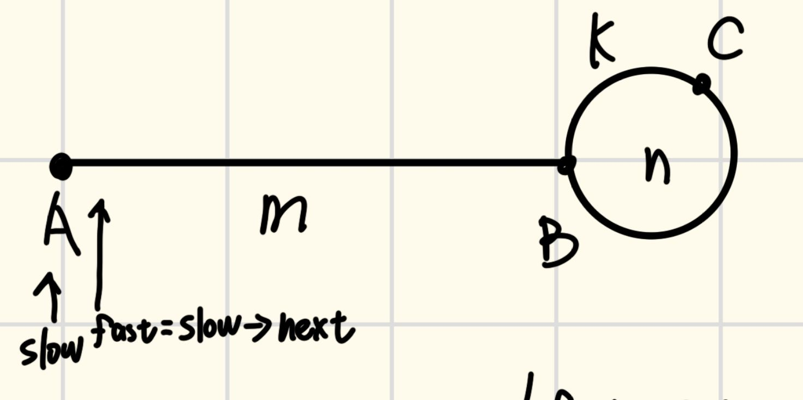
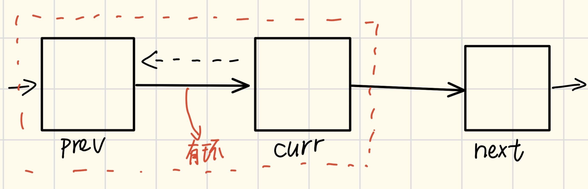

链表标签在 leetcode 一共有 「110 道题」。
相对常见的链表结构：
interface ListNode<T> {
data: T; // 数据域，存放数据。
next: ListNode; // 指向下一个节点的指针。
pre : ListNode; // 指向上一个节点，单链表没有。
}当然，本文主要基于C语言以及单向链表撰写。如果你把链表叫成是单叉树的话。
这是要删除的文本
这是要删除的文本
假如现在的节点为head->node1->node2->node3->NULL; 现插入新建节点node4到node3后(尾插)且各指针已给定(T(n) = O(1)):
struct ListNode *node4 = NULL;
node3->next = node4;
node4->next = NULL:假设有节点p需要插入到node2与node3之间且指针未给出(T(n) = O(n)): 先遍历节点找到待插入位置的前置节点。
struct ListNode *tmp = node2->next;
node2->next = p;
p->next = tmp;首先肯定是要遍历,其次无论是值比较还是索引查找，都需要O(n)
for (struct ListNode *cur = head; cur != null; cur = cur.next,i++) {
if(cur.val==target||i==id)
{return cur;}
}假如现在的节点为head->node1->node2->node3->NULL; 删除node2节点: 未给出指针需要先遍历节点找到待删除位置的前置节点(O(n))。
node1->next = node1->next->next;新手多画图！ 下面是一些常见的操作技巧:
例如Floyd判断环算法:  考虑分别从A点出发，在环上的C点相遇，那么我们有: Lfast = 2Lslow = 2(m + k) Lslow = m + k + n 直接给出结论: m + k = n
bool hasCycle(struct ListNode *head) {
if (head->next == NULL||head == NULL)
return false;
struct ListNode* slow = head;
struct ListNode* fast = head->next;
while(slow != fast)
{
if(fast == NULL||fast->next == NULL)
return false;
slow = slow->next;
fast = fast->next->next;
}
return true;
}主要用于储存这一链表的起始点，后续操作时不丢失链表。
struct ListNode *ans;
ans->next = head;主要用于连接k段链表，合并多段链表到一个链表。 比如有head->node1->a->b->node2->NULL; 和c->node3->node4->dNULL; 将cd，放入ab之间。
a->next = c;
d->next = b;判断顺序，排空可以最后考虑。
这是要删除的文本
主要是判空。
可以参考下面的修改指针，如果你学过二叉树相关的知识，链表有顺序遍历和逆序遍历。 「前序遍历容易改成不需要栈的递归，而后续遍历需要借助栈来完成」。 ###### 修改指针 比如链表翻转: 常见的迭代版本为：  考虑prev->curr结构，如果curr->next=prev会导致next丢失，所以储存next=curr->next，此后curr->next,prev->next依次迭代即可。
struct ListNode* reverse(struct ListNode* head) {
struct ListNode* prev = NULL;
struct ListNode* curr = head;
while (curr) {
struct ListNode* next = curr->next;
curr->next = prev;
prev = curr;
curr = next;
}
return prev;
}当然我们还有递归版本的: 考虑n1, n2, ⋯, ni − 1, ni, ni + 1, ⋯, nk, ϕ结构，我们易得: ni.next.next = ni 这一递推关系，可以写出下面的代码
struct ListNode* reverse(struct ListNode *head)
{
if (head == NULL || head->next == NULL)
return head;
struct ListNode* new = reverseList(head->next);
head->next->next = head;
head->next = NULL;
return new;
}